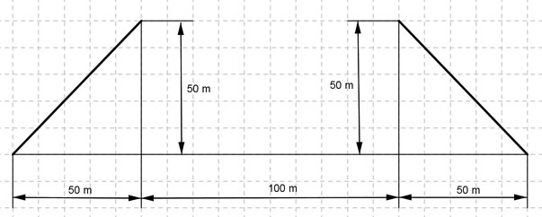

Aufgabe 127 Die beiden Straßenstücke sollen so durch eine ganzrationale Funktion miteinander verbunden werden, dass die Verlängerung tangential zur vorgebenen Richtung verläuft und die zweite Ableitung an den Verbindungspunkten gleich groß ist. Wie lautet die Funktionsgleichung?  Allgemeine Form einer Funktionsgleichung 2. Grades: f(x) = ax2 + bx + c f’(x) = 2ax + b f’’(x) = 2a 3 Bedingungen: 1. Geht durch den Punkt (0|50) bedeutet: f(0) = 50 --> a * 02 + b * 0 + c = 50 --> c = 50 2. Hat im Punkt (0|50) die Steigung 1 (tan 45° = 1) bedeutet: f’(0) = 1 --> 2a * 0 + b = 1 --> b = 1 3. Geht durch den Punkt (100|50) bedeutet: (c = 50 und b = 1 eingesetzt) f(100) = 50 --> a * 1002 + 1 * 100 + 50 = 50 | -50 --> a * 1002 + 1 * 100 = 0 | :100 a * 100 + 1 = 0 | -1 a * 100 = - 1 | :100 1 a = - ------ = -0,01 100 f(x) = -0,01x2 + x + 50